Hocking HillsWhere all the best roads lead . . .HIKE. STAY. PLAY. YOUR HOCKING HILLS ADVENTURE BEGINS HERE!
Hocking HillsWhere all the best roads lead . . .HIKE. STAY. PLAY. YOUR HOCKING HILLS ADVENTURE BEGINS HERE!


Hocking HillsWhere all the best roads lead . . .HIKE. STAY. PLAY. YOUR HOCKING HILLS ADVENTURE BEGINS HERE! 
Whispering Cave State Route 664, Logan OH 43138| GPS Tracking: (39.424856, -82.552077) Location of Cave and Trail, but parking is at Old Man's Cave parking lot. 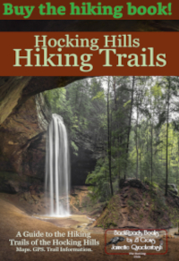
Parking at Old Man's Cave to access trail (it is a 3.7 to 5-mile, one-way loop. To hike this trail, you must go the entire 5 mile loop as it is one way): GPS Tracking to Old Man's Cave Lot for access: (39.437176, -82.539667)
Whispering Cave/Hemlock Trail is one of the 7 major hiking trails of Hocking Hills State Park in southern Ohio. Whispering Cave is a five-mile loop. It has a swinging bridge and one waterfall.
There are two places you can hop on the trail-Remember, trails are a 1-way system and you cannot turn around so prepare for a five-mile hike.
1) You can start at the Visitor Center-There are steps at the Visitor Center near the kiosk. Halfway to Cedar Falls, you can catch the Purple Trail marked by a sign.
2) You can also start at Upper Falls near that kiosk also. Follow the blue Trail markers and signs 1 1/2 miles to the Whispering Cave (Purple Trail - it is marked with a sign). It will loop around 1-way to Whispering Cave and back to the Visitor Center.
This hike may be considered strenuous for those who are not physically fit, do not hike regularly, or have health issues such as knee surgeries or heart problems. It involves a moderate to a steep incline, uneven steps, cliff edges, and steeper terrain. It is not suitable for young children or pets.
HIKERS MUST REMAIN ON THE MARKED TRAIL. Well-behaved, non-aggressive pets are permitted on a leash (not recommended because of cliffs). There is NO wading or swimming allowed in the waterfalls or creeks.

You can access Whispering Cave/Hemlock Trail at the kiosk by the parking lot at Upper Falls.
It is a 5-mile loop without a turnaround as it is one-way.
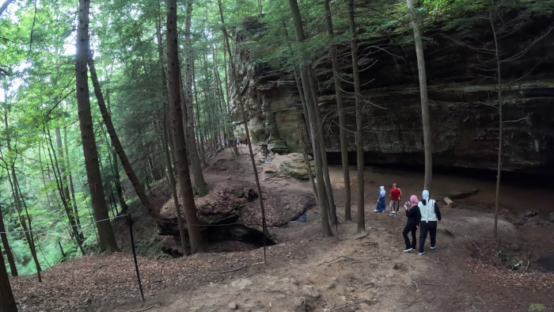
A breathtaking view along the trail.
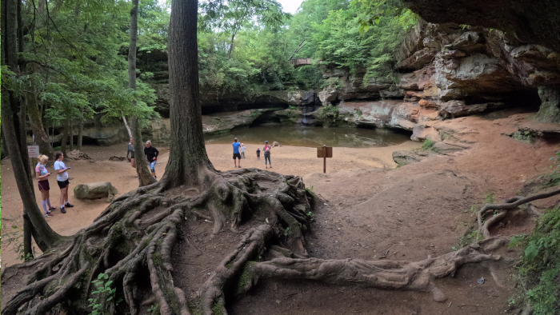
After starting at the Kiosk, you will pass Upper Falls.
Whispering Cave hike-take a peek to see what is in store for hikers along the trail to Whispering Cave!
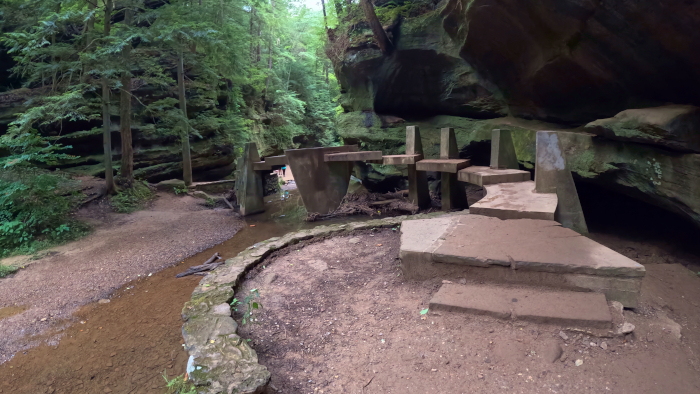
The Stepping Stone Bridge within the gorge.
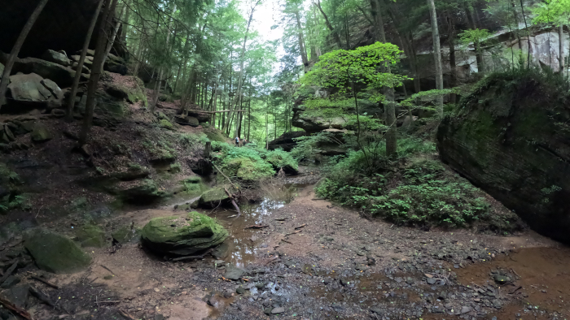
Can you see the Sphinx Head central to the picture? Hikers pass this right after passing the Old Man's Cave above-
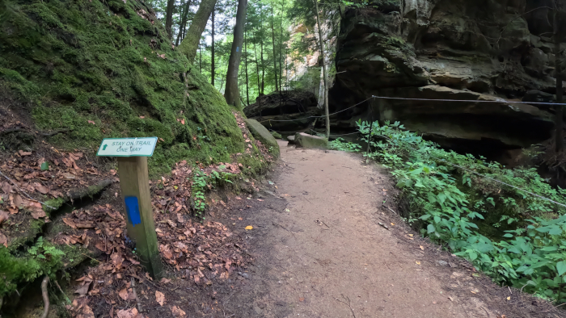
After passing Old Man's Cave, instead of taking the steps up and into Old Man's Cave, hikers go straight following the Blue Blazes of the Buckeye Trail. (Although hikers can take the super-short walk up the steps to visit the cave, of course, and return to the trail)
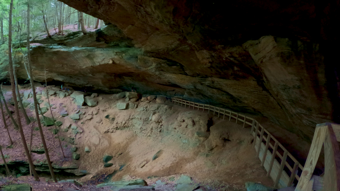
Whispering Cave. After Whispering Cave Side Trail, return to the path and follow the purple blazes.
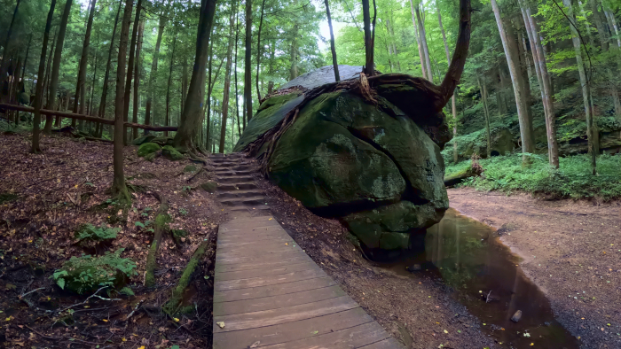
The area opens up into the most beautiful section of the gorge--after Old Man's Cave
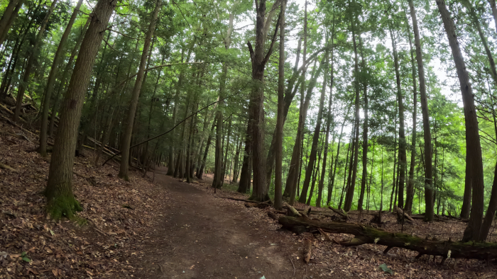
Follow the trail to the left. When coming out, you will go straight (which is to the right in this image) and turns to the purple blazes. (Note tree to the left)
Saw some pink blazes. I assume this was once purple, have faded, and the blazes have not been repainted in a few years. Also saw some of the purple blazes had green, orange, and blue like someone had accidentally marked them and then came back through and marked over them a bit with purple.
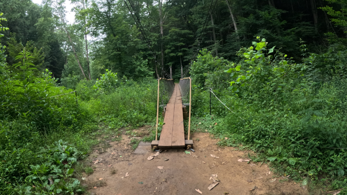
The swinging bridge located along the trail.
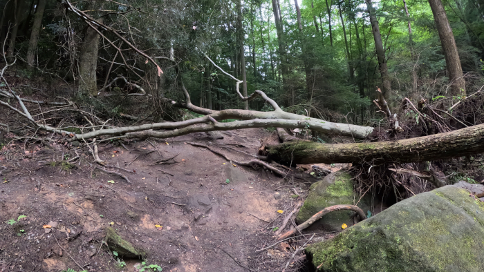
This longer and moderate trail may not be suitable for everyone. There are often uncleared downed trees, illegal outlaw trails that lead off-trail, but appear to be part of the trail system, and tree roots.

7 different hiking areas of Hocking Hills State Park- Ash Cave, Old Man's Cave, Rock House, Conkle's Hollow, Cedar Falls, Cantwell Cliffs, and Whispering Cave.
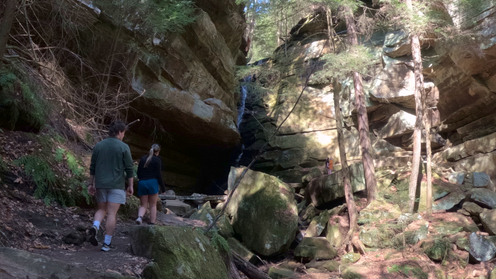
Hidden waterfalls in Hocking Hills: A scenic new bridge leads hikers off the main trail and into a secluded hollow where quiet cascades flow through untouched forest.
Parking: Hocking Hills State Park Visitor Center
20343-20347 OH-374 Logan, OH 43138 GPS Tracking: (39.396081, -82.545782)
There are two places you can hop on the trail-Remember; trails are a 1-way system.
1) You can start at the Visitor Center-There are steps at the Visitor Center near the kiosk.
2) You can also start at Upper Falls near that kiosk.
Follow the blue trail markers and signs 1 1/2 miles to the Whispering Cave Purple Trail (It is marked with a sign). It will loop around 1-way to Whispering Cave and back to the Visitor Center
Yellow: Whispering Cave Loop Trail (Yellow Blazes on Trees)
Purple is the Old Man's Cave to Whispering Cave Trail Loop Trail (Purple Blazes on Trees)
Blue: Grandma Gatewood Trail (Blue Blazes on Trees)


Whispering Cave Loop
Logan, OH 43138
Parking Access for both trailheads is at Old Man's Cave: 39.437176, -82.539667

Whispering Cave Loop is a strenuous, one-way trail day hike.


There are seven major hiking areas in Hocking Hills State Park - All are one-way trail systems.
Ash Cave, Old Man's Cave, Rock House, Conkle's Hollow, Cedar Falls, Cantwell Cliffs, and Whispering Cave Trail. These park areas offer a unique experience for those who walk its paths no matter what season (the park is open year-round from dawn to dusk)—located on the southern edge of Hocking County. But those are just a handful. There are many hiking trails in the Hocking Hills include those at Wayne National Forest, Clear Creek Metro Parks, Lake Hope State Park, Vinton County Park District's Moonville Tunnel, and Hocking College's Robbins Crossing (with park programs) and the Athens Hock-Hocking Adena Rail Trail bikeway.